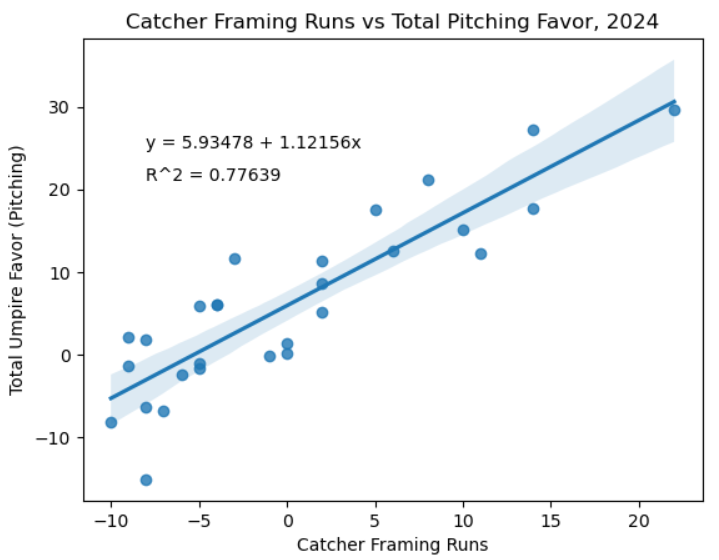

Backwards Ks: Umpire Performances and How Catchers Change Games
By Orlando Pereira | May 23, 2025

On July 25th, 2019, the independent Atlantic League became the first professional baseball league to implement the Automated Ball-Strike System (ABS). Since 2021, MLB has tested both full ABS and a modified challenge system across various levels of Minor League Baseball, culminating in a trial run during MLB Spring Training in 2025. The recent MLB Spring Training trial utilized a challenge system, which gave teams two ball-strike call challenges per game, with a team retaining a challenge if their challenge was successful. These decisions have generated various debates on the effectiveness of umpires, their impact on the game, and the potential consequences of giving umpires less power. Stances range from rejecting ABS entirely to preserve baseball traditions to a complete implementation of ABS to create a perfectly called strike zone. Luckily, access to data around umpires and their performances has greatly expanded in the last decade, allowing for insight into how they affect the game.
Umpire Performance since 2015
Thanks to Umpire Scorecards (umpscorecards.com), it is now easy to analyze umpire performances across nearly all MLB games since 2015. For each game, UmpScorecard calculates a total run impact (totRI) for the home plate umpire, based on the run value of each of their missed calls. Taking the average totRI (avgRI) per year since 2015 shows some interesting results:
There has been a clear decrease in run impact per game over the past 9 years, dropping almost every year with the exception of a slight increase in 2024. However, the overall trend shows around a half run decrease in run impact since 2015. One factor in this trend could be the replacement of umpires over the last couple of years. Two notable retirements include Joe West and Angel Hernandez, both of whom trended above the average avgRI for most of the year with available data. More specifically, Joe West had an above average avgRI every year from 2015 until his retirement at the end of 2021, while Angel Hernandez was above the average avgRI in eight of his ten seasons between 2015 and 2024. On the other hand, MLB’s two most recently promoted umpires (as of 2024), Dan Merzel and Nate Tomlinson, were both below the average avgRI in all but one year (Tomlinson in 2020) in MLB action before being promoted full-time. This shows a potential effort on the behalf of MLB to decrease the overall run impact of umpires. Despite continued frustration from fans and players alike over the performance of umpires, statistics show that umpires have in fact been improving.
Catcher Framing
Often overlooked when exploring individual umpire performances, a catcher’s ability to effectively frame pitches influences an umpire’s decision to call particular pitches in a particular way. UmpScorecards provides data on how much each team is favored by umpires by summing the positive run impact a team receives on missed calls with the negative run impact they receive, being able to isolate the sum of run favor specifically while a team is pitching. Looking at the total favor for teams in 2024, the New York Yankees led MLB with a +29.6 total run impact, while the formerly Oakland Athletics were in last place with -15 total run impact. Focusing on catcher framing, Baseball Savant provides data on a catcher’s ability to get strikes called around the edge of the strike zone. They give a stat called Catcher Framing Runs, which approximates the run value that each catcher generates based on how many strike calls they get within a ball’s diameter of the edge of the strike zone, both inside and outside. In 2024, the Yankees also had the highest Catcher Framing Runs with a combined +22 split between Austin Wells (+12) and Jose Trevino (+10), Comparing all teams’ total umpire run impact and their Catcher Framing Runs showed the following:
Similarly to the Yankees, the majority of teams seemed to have a relatively strong correlation between how umpires called their games and their catcher’s framing ability. The R^2 value of approximately 0.776 indicated that 77.6% of the variance in Total Umpire Favor can be explained by differences in Catcher Framing Runs. This is quite a strong correlation, indicating a strong influence of catchers over umpire decisions. Expanding to the full dataset of games since 2015 yields a similar result:
The strong correlative trend continues when expanding the scope of comparison to the last 10 MLB seasons, with the R^2 value growing even larger. This correlation between umpires and catchers broadens the scope of what a move towards ABS would signify. While correcting umpire mistakes, ABS would also completely eliminate framing from the sport. Whether that is good or bad is a matter of personal opinion, but it would also drastically change the value that some catchers provide over others.
Conclusion
As the sports landscape continues to modernize with more and more technological assistance, it is important to reflect on where the limits lie and what changes are truly necessary. With seemingly improving umpire performances and the strong ties between catcher framing and ball-strike decisions, the introduction of ABS may be where the water gets too deep. If all decisions can be made by a computer, umpires become obsolete and would have absolutely no business being on the field. Also, while an automated strike zone would benefit hitters, it could be costly to the careers of defense-oriented catchers who gain a lot of value from being elite framers. This dilemma will likely play an important role in the upcoming Collective Bargaining Agreement (CBA) negotiations, set to take place after the 2026 season. While MLB is eager to implement ABS, the MLB Players Association (MLBPA) has expressed hesitance to embrace it, citing the aforementioned effect such a system will have on the future of catching. All of this is without mentioning the margin of error within ABS, which is still capable of making mistakes. Perhaps the challenge system represents a happy medium, but only time will really be able to tell.
Credits
AP Photo/Charles Rex Arbogast
Umpire Scorecards (umpscorecards.com)
Baseball Savant (baseballsavant.mlb.com)